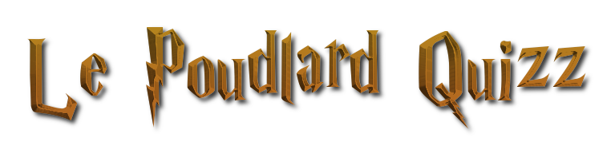
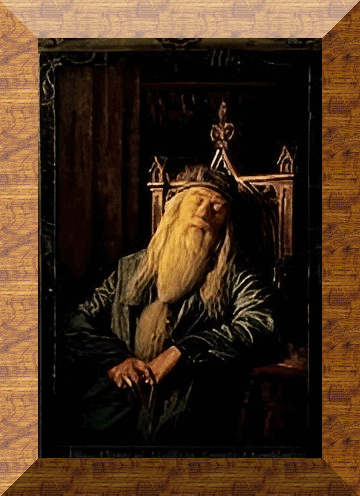

 As tu peur de respirer ? Non je ne mange pas de ce pain la Jaaj Jauje  Afficher résultats demandés Affichage des profils demandés : Afficher profil personnalisé Profil personnalisé : Oui, je déteste les frites